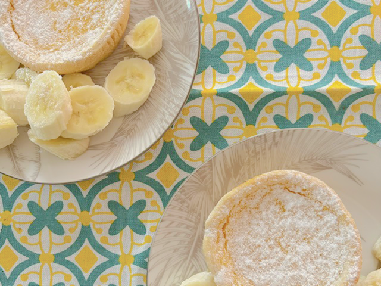
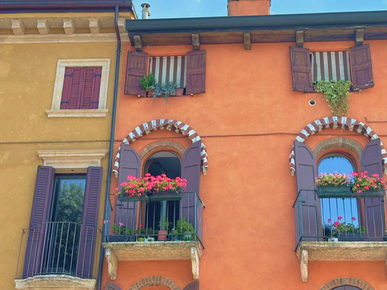

はじめまして

美容・ウェルネス・住まいに関わる仕事で、約20年接客やお客様対応に携わってきました。
小規模店舗から大手企業まで幅広い現場で、お客様一人ひとりと向き合い、その方に合った提案やサービスを届ける役割を担ってきました。
さまざまな経験を重ねる中で、相手を理解し、想いや情報を整理して届ける力は、どのような場面でも活かせるものだと実感しました。
仕事をする中で、いつも考えていたのは「お客様は本当は何を求めているんだろう？」ということです。
お話を伺いながら、言葉になっていない想いや背景を整理し、ご本人の中でもまだ輪郭のはっきりしていなかった部分を一緒に見つけていく。そんな関わり方を大切にしてきました。その延長線上で出会ったのがデザインです。

接客からデザインへと仕事は変わりましたが、想いや情報を整理し、人とサービスをつなぐことは、今も変わらない私の軸です。
現在は家族とともにイタリアで暮らしながら制作活動をしています。日々の暮らしの中で触れる街並みや色彩、人々の感性は制作のインスピレーションのひとつです。
かわいすぎる愛犬をそばに、日々制作に取り組んでいます。
